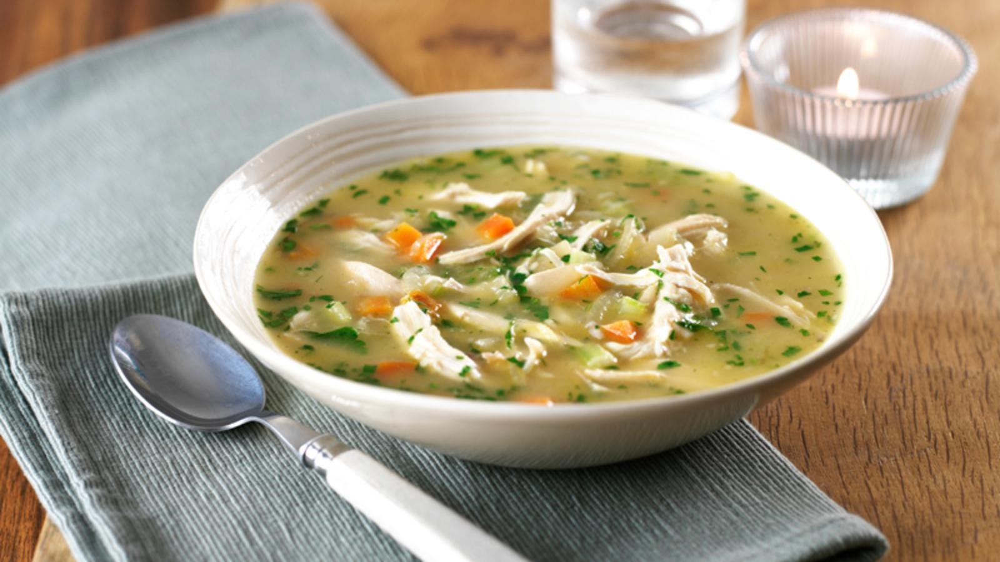
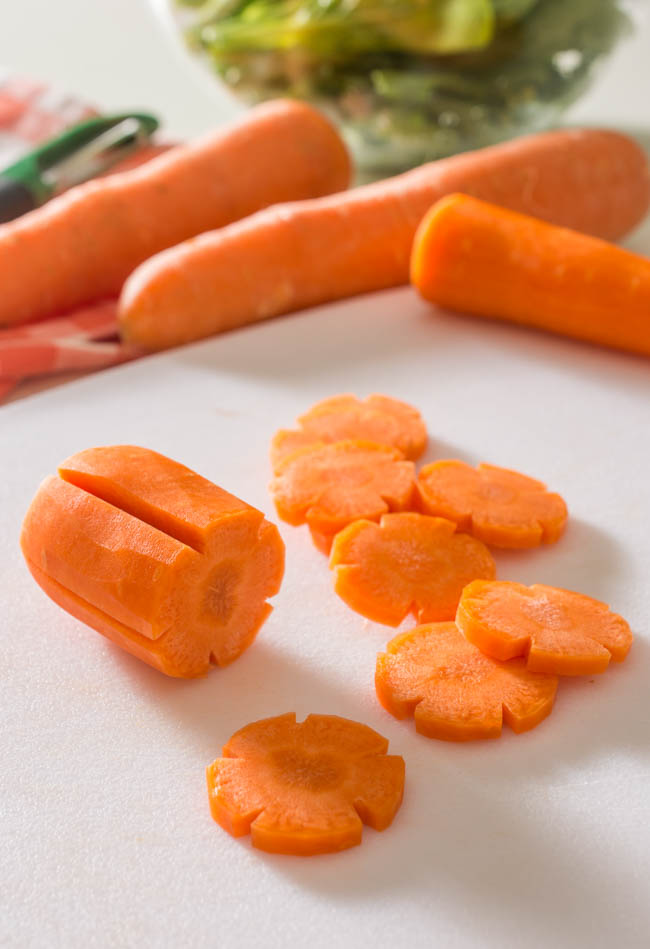
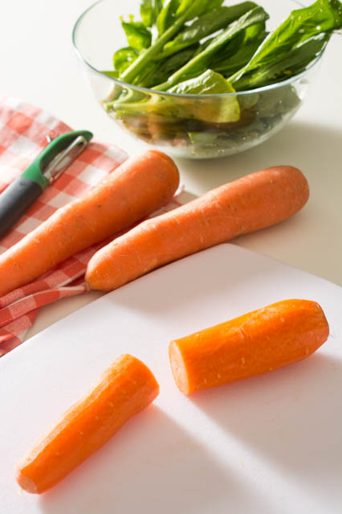
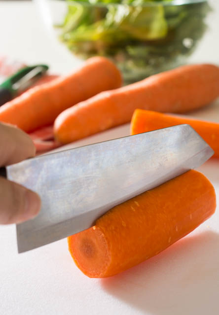
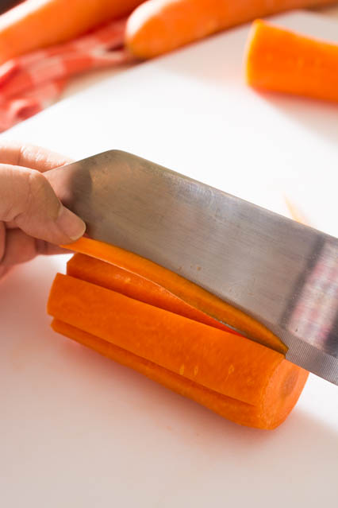
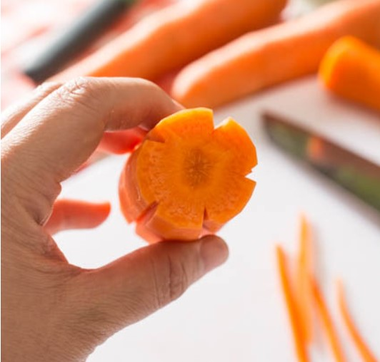
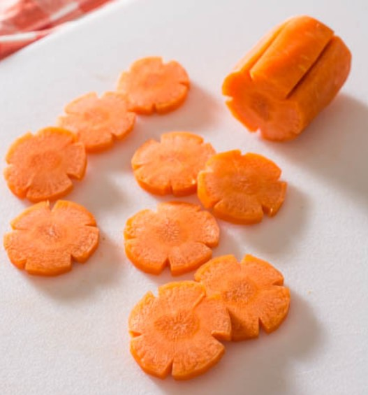

Chicken Soup

Pure soul food, this warming, easy chicken soup makes the most of leftover roast chicken.
It's a simple soup recipe, so really relies on the quality of the stock
Each serving provides 288kcal, 28g protein, 11.5g carbohydrate (of which 7g sugars), 14g fat (of which 6.5g saturates), 3.4g fibre and 0.7g salt.
Ingredients
- 55g/2oz butter
- 2 onions, sliced
- 2 sticks celery, finely chopped
- 2 carrots, finely diced
- 25g/2oz plain flour
- 1.2 litres/2 pints chicken stock
- 450g/1lb cooked chicken, skinned and shredded
- 1 tbsp chopped fresh parsley
- salt and freshly ground black pepper
Instructions
- Melt the butter in a large saucepan over a medium heat and gently fry the onions, celery and carrots until they start to soften.
- Stir in the flour and cook for 2 minutes. Add the chicken stock and bring the mixture to the boil, stirring as you do so. Season with salt and pepper, then reduce the heat until the mixture is simmering and simmer for 10 minutes, or until the vegetables are tender.
- Add the cooked chicken and cook until heated through. Adjust the seasoning, stir in the parsley and serve.
Bonus: cutting Carrots into flowers

Carrots add sweetness, crunch and a splash of color to most dishes; especially stir-fries.
Make them stand out even more by cutting the carrots into pretty flower-shaped slices. Here’s a step-by-step guide on how to cut carrots into flowers!
- Wash and peel the carrot.
- Place the carrot horizontally on a cutting board, then cut it in half down the middle.
- Cut off the ends

- Cut a V-shaped groove using the length of your knife’s blade. Carefully cut at a 45-degree angle on one side, then again on the opposite side to complete the V.
Don’t make the grooves too deep or the flower petals will look too square. Start small, and you can always make the groove deeper if needed.

- Cut four more grooves on the carrot, spacing them evenly.

- Five grooves on the carrot will give you five petals on the flower, which is ideal for aesthetics as most flowers have 5 petals.
On smaller carrots, you may only be able to cut four grooves which will give it four petals, which is okay too.

- Place the carrot horizontally on your cutting board then cut into thin slices.

- Voila! You now have carrot flowers! Use them in stir-fries, salads, or enjoy them as a healthy snack.